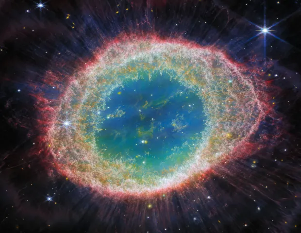
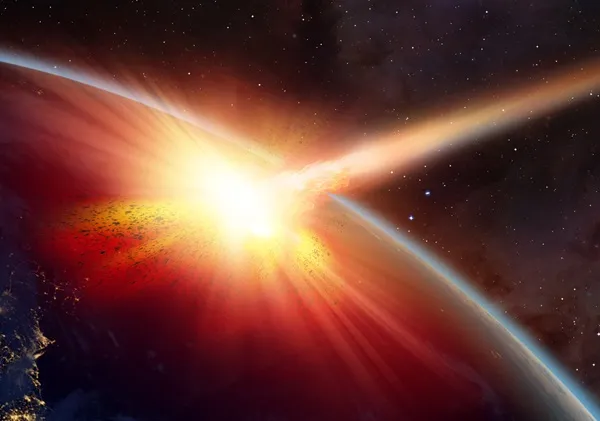

Latest News
JWST sees the Ring Nebula in a new light
Published on August 25, 2023 by Univerze
The high-definition infrared images reveal unique details that are helping astronomers better understand how Sun-like stars live and die.

The Ring Nebula, as imaged by JWST's NIRCam instrument. Credit: ESA/Webb, NASA, CSA, M. Barlow, N. Cox, R. Wesson
JWSTs Near-InfraRed Camera (NIRCam) and Mid-InfraRed Instrument (MIRI) captured the nebula's subtle, luminous rings and wispy clouds. Inside the Ring Nebula is a white dwarf star surrounded by an inner halo of helium gas, encased by rings of oxygen and hydrogen, and then nitrogen and sulfur. The vibrant hues of the images are colorized to represent different chemical elements that emit light in different colors, like fireworks.
The image from NIRCam reveals the interior of the ring filled with hot gas, showing intricate details such as filamentary structures. At the same time, MIRI exposes the concentric, smoky threads crowning the outer regions of the nebula.
The James Webb Space Telescope (JWST) captured its first set of striking images of the Ring Nebula (M57), revealing detail and intricate features of the final stages of a dying star. Located about 2,200 light-years from Earth, the nebula is shaped like a distorted doughnut molded from the outer layers expelled thousands of years ago by an aging Sun-like star. The images are the most detailed of the object to date and will help astrophysicists study and understand the cosmic processes that sculpted the celestial phenomenon.
“These images hold more than just aesthetic appeal; they provide a wealth of scientific insights into the processes of stellar evolution. By studying the Ring Nebula with JWST, we hope to gain a deeper understanding of the life cycles of stars and the elements they release into the cosmos,” said Nick Cox, an astronomer and one of the team members who released the images at ACRI-ST, in a press release.
Read more
What Cassini taught us about Saturn
Published on August 25, 2023 by Univerze
In 2017, the mission famously ended by plunging into the cloud tops. But before it did, it showed us so much about the ringed world.

NASA's Cassini spacecraft took a wide-angle image of the sunlit side of Saturn. Credit: NASA/JPL-Caltech/Space Science Institute
In 2017, the Cassini spacecraft, which had spent nearly two decades working in orbit around Saturn, ended its mission in a “Grand Finale.” But before the spacecraft went out in a blaze of glory by plunging into the planet's atmosphere, it recorded subtle gravitational changes, which astronomers have now used to build a map of the interior of the solar system's second gas giant.
Orbits are a tricky business. It's not just a matter of sticking a spacecraft in orbit and letting it go. Any slight changes to the gravitational pull on a spacecraft can affect its trajectory. And those slight changes can come from influences far away in space, and influences deep within the planet.
The distribution of matter within a planet will change anything orbiting around it. For example, a satellite flying above Mount Everest will experience a slightly different gravitational pull from Earth than one flying over the middle of the Pacific.
By carefully recording these changes in a satellite's flight path, astronomers can reconstruct what a planet is made of and where its mass is.
In the case of the Cassini spacecraft, astronomers used data from the orbiter's Grand Finale, a series of orbits that brought it spiraling to its doom in Saturn's atmosphere. Despite decades of research, that planet's interior remains largely a mystery, since we typically only have access to observations of the surface, which represent the uppermost reaches of the planet's atmosphere.
But Cassini's Grand Finale gave us a major clue as to what's going on inside that planet. The astronomers behind the study examined tiny variations in the frequency of signals emitted by the spacecraft's communications antenna. Those variations were due to Doppler shifts as Cassini orbited Saturn, and were directly tied to the detailed gravitational environment under the spacecraft during its orbits.
Read more
How will life on Earth end?
Published on August 25, 2023 by Univerze
Asteroid strikes, supernovae blasts, and other calamities could take out humanity. But no matter what, a cataclysmic event 1 billion years from now will likely rob the planet of oxygen, wiping out life.

Asteroid strikes, supernovae blasts, and other calamities could take out humanity. But no matter what, a cataclysmic event 1 billion years from now will likely rob the planet of oxygen, wiping out life.
Life is resilient. The first living things on Earth appeared as far back as 4 billion years ago, according to some scientists. At the time, our planet was still being pummeled by huge space rocks. But life persisted anyway. And throughout Earth's history, it's seen all manner of cataclysms. Disparate doomsdays — from supernovae blasts and asteroid strikes to huge volcanic eruptions and sudden climate shifts — have killed countless lifeforms. And at times, those mass extinctions have even eliminated most species on Earth.
Yet, life has always rebounded. New species emerge. The cycle repeats.
So, what would it take to kill off life in full? Well, it turns out that while humanity might be surprisingly fragile, it's not easy to sterilize an entire planet. Nonetheless, below are just a few possible doomsday events that could permanently extinguish all life on Earth — and the last one is likely unavoidable.
Asteroid impact apocalypse
When a city-sized asteroid struck the Gulf of Mexico 66 million years ago, it was game over for the dinosaurs, as well as most other species on Earth at the time. And while our ancestors hadn't yet evolved, the impact was perhaps the single most important event in human history. Without that asteroid strike, dinosaurs might have continued to rule the Earth, leaving us mammals still cowering in the shadows.

This artist's illustration highlights the tremendous amount of energy released when an asteroid strikes a planet.